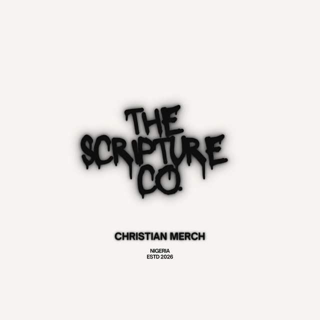

About
THE SCRIPTURE CO. is a Christian merchandise and streetwear brand from Nigeria, established in 2026.
We make faith visible, wearable, creative and relevant to young people. Every piece carries scripture, kept exactly as written, in designs made to be worn out loud.